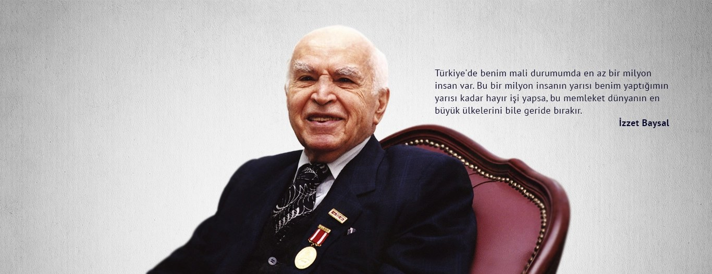

Hakkımızda
Abant İzzet Baysal Üniversitesi Mezunları Derneği — T.C. Bolu Valiliği İl Dernekler Müdürlüğü'nün 29/06/2010 tarihli onayı ile Bolu'da kurulmuş, İstanbul Şubesi ise 04.02.2012 tarihinde açılmıştır.
Kuruluşumuzdan bu güne, iletişim ve beraberliğin gücüne verdiğimiz önemle hareket ediyor, tüm faaliyetlerimizi bu temel üzerinden planlıyor ve gerçekleştiriyoruz. Sadece mezunlarımız arasında değil, üniversitemizle, üniversitemizin öğrenci adayları ve öğrencileri ile de sürekli bir iletişim hedefliyoruz.
Genel anlamda birlik ve beraberliği sağlayabilmek adına, üniversitemizin kuruluşundan itibaren mezunlarımıza ulaşıyoruz, mezunlarımız arasındaki iletişim sayesinde, gerek iş gerekse sosyal hayatlarında kendilerine faydalı olabilecek paylaşımlarda bulunabilmelerinin önünü açıyoruz.
Yine aynı ilke adına, mezunlarımız ile öğrencilerimiz ve mezun adaylarımız arasında da bir köprü oluşturarak, özellikle mezuniyet sonrası iş ve sosyal hayatlarında kendilerine olumlu katkılar sağlayacak bir ağ oluşturuyoruz.
Misyonumuz
Mezunlarımızı, hem birbirleri ve hem üniversite ile sürekli bağlantı içinde tutmaya, ailevi bir birliktelik ortamı tahsis etmeye öncelik veriyoruz. Bu öncelik sayesinde sağladığımız birliktelikle, faaliyetlerimize güç katıp kapsam ve faydalarını genişleterek; gerek ülkemizde gerekse dünya üzerindeki diğer üniversite dernekleri arasında, tüm faaliyetlerimizle iz bırakmayı hedefliyoruz.
Vizyonumuz
İzzet Baysal'ın eğitim dünyasında açtığı yolda ilerleyerek, üniversitemizin kuruluşundan itibaren tüm mezunlarına ulaşmak, mezunlar arasında iletişim ve beraberliği sağlamak, mezunlar ile öğrenciler arasında bir köprü oluşturmak, mezun adaylarına iş ve sosyal yaşantılarında pozitif ayrımcılık sağlayacak faaliyetleri organize etmek ve AİBÜ kimliğini mezunlar vasıtasıyla yüceltmek.

Dernek Tüzüğü
Derneğimizin onaylı tüzüğüne sağ paneldeki belgeden ulaşabilirsiniz.